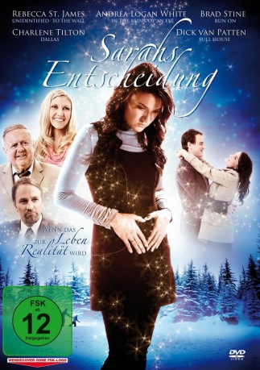

#10287 Sarahs Entscheidung
Alternativ: Sarah's Choice (Englischer Titel)
 
 IMDB-Wertung: 5.6 / 10
IMDB-Wertung: 5.6 / 10  Metascore: 0
Metascore: 0 
Sarah ist eine junge Frau, die gerade im Begriff ist, die Karriereleiter emporzuklettern, als sie ungewollt schwanger wird. Von finanziellen Grundängsten geplagt, steht sie nun vor der Wahl, ihren gerade aufkeimenden beruflichen Erfolg und die damit verbundene finanzielle Unabhängigkeit zugunsten des Mutterglücks zu opfern, oder das moralisch Unmögliche zu tun: das Kind abzutreiben. Als ein Fremder in ihr Leben tritt und ihr voraussagt, dass sie drei Visionen haben wird, die ihr Herz und ihren Verstand zur richtigen Entscheidung fuhren werden, zugleich der finanzielle Druck wachsen wird, steht sie vor der schwierigsten Entscheidung ihres Lebens...
Jahr: 2009
Dauer: 86 Minuten
FSK:
Land: USA Studio: Pure Flix EntertainmentTonspuren: DTS - ,
Untertitel:
Auflösung: 1080p (1920x1080) Größe: 4976 MB
Genre: Drama
Regisseur: Chad Kapper
Drehbuch: Sean Paul Murphy, Timothy Ratajczak
Soundtrack: Jim Ballard
Darsteller:
- Andrea Logan White als Megan
 Dick Van Patten als Rev. Al Smith
Dick Van Patten als Rev. Al Smith- Brad Stine als Clay
- Staci Keanan als Denise
- Julian Bailey als Matt Evans
 Robert Miano als Henry
Robert Miano als Henry- Sean McGowan als Jim
- Linda Bisesti als Agnes Collins
- Judy Lewis als Older Sarah
- Autumn Paul als Audrey
 Carey Scott als Justin
Carey Scott als Justin- Charlene Tilton als Abortion Doctor
- Yvette Tucker als Jennifer
- Brittany Yost als Secretary
- Rebecca St. James als Sarah Collins
- Ethan Cooper Roy als Sam
- Sidney Mason Gunn als Denise's daughter Sid
- Matthew Bacis als Michael
- Marc Davies als Bob
- Sean Sedgwick als Thad
- Libby Smallbone als Daisy
- Jill Taylor als Lady Videographer
- Kaitlin Vidak als Nurse #1
- Lauren Wolfe als Daisy age 6
- Russell Wolfe als Nick
Datei: X:\2009(N-Z)\Sarahs Entscheidung (2009, FSK, 1920x1080).mkv seit 29.12.2018
Festplatte: HD 2009(G-Z)-2010(A-F)
 Es gibt insgesamt 99 Filme in der Gruppe '2009(N-Z)'
Es gibt insgesamt 99 Filme in der Gruppe '2009(N-Z)'